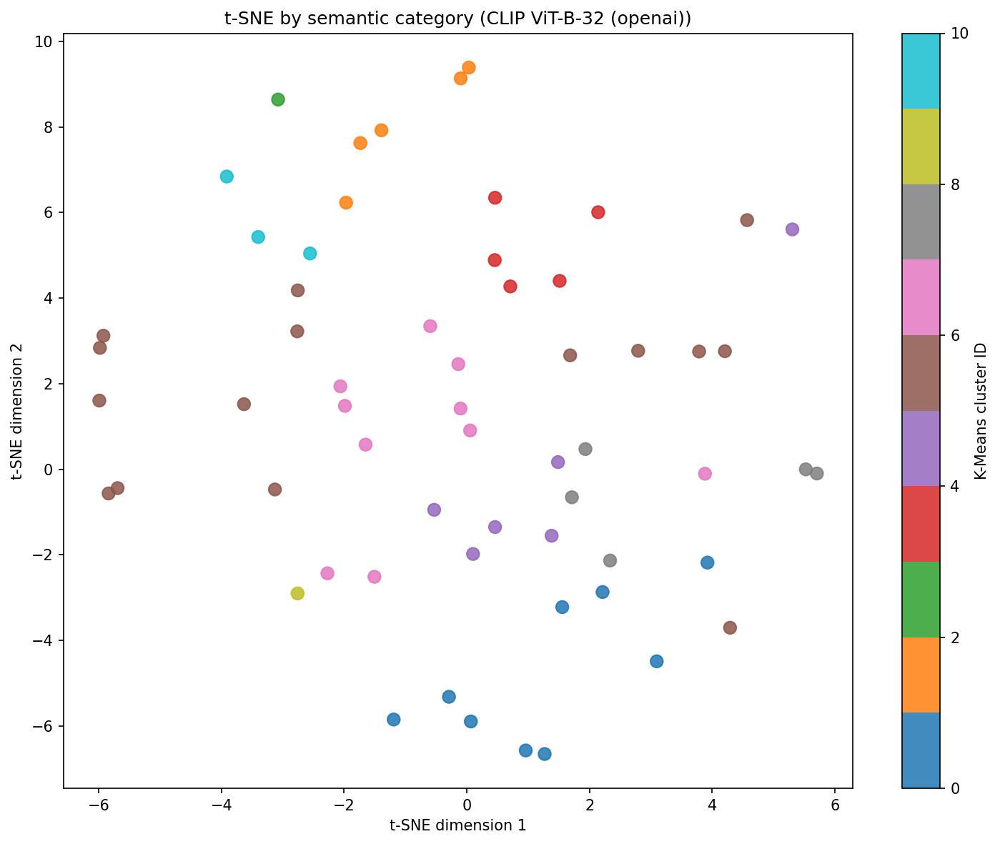

60 images from issue_eval/images.
Each image is compared to natural-language scene prompts. The highest-scoring category is the semantic group. Prompts are averaged per category (prompt ensembling).
Not the same as the K-Means report: The file issue_cluster_analysis.json groups by K-Means on embedding distance (numeric clusters 0–4, not named themes). This report groups by CLIP text–image similarity to explicit scene descriptions (food, aviation, street, etc.).

Athletes, playing fields, courts, and outdoor sports.
Avg CLIP confidence in this group: 76.8%
000000000049.jpg000000000077.jpg000000000113.jpg000000000149.jpg000000000201.jpg000000000328.jpg000000000357.jpg000000000360.jpg000000000395.jpg000000000419.jpg000000000474.jpg000000000508.jpg000000000531.jpg000000000544.jpg000000000564.jpgPets, wildlife, or animal-focused photos.
Avg CLIP confidence in this group: 77.6%
000000000042.jpg000000000061.jpg000000000074.jpg000000000136.jpg000000000208.jpg000000000309.jpg000000000490.jpg000000000491.jpg000000000581.jpg000000000623.jpgMeals, restaurants, kitchens, and table-focused scenes.
Avg CLIP confidence in this group: 79.7%
000000000009.jpg000000000110.jpg000000000127.jpg000000000196.jpg000000000294.jpg000000000308.jpg000000000397.jpg000000000486.jpg000000000584.jpgRooms with many people, gatherings, offices, or living spaces.
Avg CLIP confidence in this group: 66.7%
000000000241.jpg000000000389.jpg000000000446.jpg000000000514.jpg000000000536.jpg000000000643.jpgPlanes, airports, runways, and aerial views of aircraft.
Avg CLIP confidence in this group: 95.2%
000000000247.jpg000000000260.jpg000000000472.jpg000000000540.jpg000000000542.jpgRoads, cars, buses, intersections, and urban traffic scenes.
Avg CLIP confidence in this group: 70.3%
000000000250.jpg000000000257.jpg000000000359.jpg000000000641.jpgsample.jpgFurniture, appliances, bathrooms, bedrooms — not primarily food.
Avg CLIP confidence in this group: 72.2%
000000000133.jpg000000000164.jpg000000000384.jpg000000000560.jpg000000000590.jpgParks, beaches, mountains, sky — not dominated by vehicles or food.
Avg CLIP confidence in this group: 50.1%
000000000109.jpg000000000315.jpgTrains, tracks, stations, and railway yards.
Avg CLIP confidence in this group: 99.5%
000000000071.jpgStores, shelves, products, and shopping environments.
Avg CLIP confidence in this group: 57.1%
000000000612.jpgBoats, harbors, and water-centric scenes.
Avg CLIP confidence in this group: 64.3%
000000000520.jpg| Image | Semantic group | CLIP confidence | Runner-up | Segmentation issue |
|---|---|---|---|---|
| 000000000042.jpg | Animals | 61.9% | Retail & shops | The model often misses entire categories here (e.g. dog). Labeled 1 objects vs 3 detected.… |
| 000000000061.jpg | Animals | 75.7% | Nature & outdoor landscape | The model often misses entire categories here (e.g. elephant). Labeled 5 objects vs 3 detected.… |
| 000000000074.jpg | Animals | 92.4% | Food & dining | Some objects were found (6 of 8), but masks may still be wrong shape or class. This image is in the … |
| 000000000136.jpg | Animals | 64.1% | Indoor people & crowds | Some objects were found (4 of 4), but masks may still be wrong shape or class. This image is in the … |
| 000000000208.jpg | Animals | 59.2% | Food & dining | The model often misses entire categories here (e.g. toothbrush). Labeled 4 objects vs 2 detected.… |
| 000000000309.jpg | Animals | 73.2% | Sports & recreation | The model often misses entire categories here (e.g. teddy bear). Labeled 4 objects vs 3 detected.… |
| 000000000490.jpg | Animals | 73.5% | Indoor people & crowds | Some objects were found (2 of 2), but masks may still be wrong shape or class. This image is in the … |
| 000000000491.jpg | Animals | 93.9% | Retail & shops | The model often misses entire categories here (e.g. teddy bear). Labeled 4 objects vs 2 detected.… |
| 000000000581.jpg | Animals | 98.5% | Indoor people & crowds | Some objects were found (3 of 1), but masks may still be wrong shape or class. This image is in the … |
| 000000000623.jpg | Animals | 83.3% | Indoor people & crowds | The model often misses entire categories here (e.g. bench, chair). Labeled 4 objects vs 2 detected.… |
| 000000000247.jpg | Aviation & aircraft | 99.8% | Animals | The scene is crowded (8 objects labeled). The model only found about 3, so many things were missed —… |
| 000000000260.jpg | Aviation & aircraft | 78.8% | Rail & trains | Some objects were found (7 of 7), but masks may still be wrong shape or class. This image is in the … |
| 000000000472.jpg | Aviation & aircraft | 98.2% | Water & boats | Some objects were found (1 of 1), but masks may still be wrong shape or class. This image is in the … |
| 000000000540.jpg | Aviation & aircraft | 99.8% | Street & traffic | The scene is crowded (20 objects labeled). The model only found about 1, so many things were missed … |
| 000000000542.jpg | Aviation & aircraft | 99.2% | Indoor people & crowds | The model often misses entire categories here (e.g. handbag, tie). Labeled 17 objects vs 12 detected… |
| 000000000009.jpg | Food & dining | 95.8% | Retail & shops | The model often misses entire categories here (e.g. orange). Labeled 8 objects vs 7 detected.… |
| 000000000110.jpg | Food & dining | 98.5% | Indoor people & crowds | The model often misses entire categories here (e.g. fork). Labeled 24 objects vs 18 detected.… |
| 000000000127.jpg | Food & dining | 49.4% | Nature & outdoor landscape | The model often misses entire categories here (e.g. person, umbrella, handbag, potted plant…). Label… |
| 000000000196.jpg | Food & dining | 99.4% | Indoor people & crowds | The scene is crowded (42 objects labeled). The model only found about 17, so many things were missed… |
| 000000000294.jpg | Food & dining | 71.4% | Retail & shops | The scene is crowded (20 objects labeled). The model only found about 3, so many things were missed … |
| 000000000308.jpg | Food & dining | 22.8% | Sports & recreation | The model often misses entire categories here (e.g. clock). Labeled 13 objects vs 15 detected.… |
| 000000000397.jpg | Food & dining | 98.0% | Indoor people & crowds | The scene is crowded (7 objects labeled). The model only found about 3, so many things were missed —… |
| 000000000486.jpg | Food & dining | 83.0% | Retail & shops | The scene is crowded (8 objects labeled). The model only found about 2, so many things were missed —… |
| 000000000584.jpg | Food & dining | 99.5% | Animals | The scene is crowded (14 objects labeled). The model only found about 6, so many things were missed … |
| 000000000133.jpg | Home interior & objects | 56.4% | Retail & shops | The model often misses entire categories here (e.g. teddy bear). Labeled 2 objects vs 1 detected.… |
| 000000000164.jpg | Home interior & objects | 61.9% | Indoor people & crowds | The scene is crowded (40 objects labeled). The model only found about 9, so many things were missed … |
| 000000000384.jpg | Home interior & objects | 60.0% | Indoor people & crowds | The scene is crowded (11 objects labeled). The model only found about 5, so many things were missed … |
| 000000000560.jpg | Home interior & objects | 94.3% | Indoor people & crowds | The model often misses entire categories here (e.g. toilet, cell phone). Labeled 5 objects vs 3 dete… |
| 000000000590.jpg | Home interior & objects | 88.6% | Indoor people & crowds | The model often misses entire categories here (e.g. bowl). Labeled 2 objects vs 3 detected.… |
| 000000000241.jpg | Indoor people & crowds | 82.9% | Sports & recreation | The model often misses entire categories here (e.g. potted plant). Labeled 14 objects vs 11 detected… |
| 000000000389.jpg | Indoor people & crowds | 44.9% | Animals | The model often misses entire categories here (e.g. backpack). Labeled 14 objects vs 10 detected.… |
| 000000000446.jpg | Indoor people & crowds | 65.8% | Animals | The scene is crowded (13 objects labeled). The model only found about 4, so many things were missed … |
| 000000000514.jpg | Indoor people & crowds | 58.6% | Home interior & objects | The model found nothing, but 1 object(s) should be there. The scene was effectively skipped.… |
| 000000000536.jpg | Indoor people & crowds | 97.3% | Home interior & objects | The scene is crowded (11 objects labeled). The model only found about 4, so many things were missed … |
| 000000000643.jpg | Indoor people & crowds | 50.4% | Animals | The scene is crowded (20 objects labeled). The model only found about 5, so many things were missed … |
| 000000000109.jpg | Nature & outdoor landscape | 64.2% | Water & boats | The model often misses entire categories here (e.g. dog). Labeled 8 objects vs 7 detected.… |
| 000000000315.jpg | Nature & outdoor landscape | 36.0% | Water & boats | The scene is crowded (38 objects labeled). The model only found about 13, so many things were missed… |
| 000000000071.jpg | Rail & trains | 99.5% | Street & traffic | The scene is crowded (16 objects labeled). The model only found about 5, so many things were missed … |
| 000000000612.jpg | Retail & shops | 57.1% | Indoor people & crowds | Some objects were found (6 of 11), but masks may still be wrong shape or class. This image is in the… |
| 000000000049.jpg | Sports & recreation | 84.1% | Animals | The model often misses entire categories here (e.g. potted plant). Labeled 9 objects vs 9 detected.… |
| 000000000077.jpg | Sports & recreation | 90.9% | Nature & outdoor landscape | The model often misses entire categories here (e.g. skateboard). Labeled 8 objects vs 4 detected.… |
| 000000000113.jpg | Sports & recreation | 31.4% | Indoor people & crowds | The scene is crowded (18 objects labeled). The model only found about 8, so many things were missed … |
| 000000000149.jpg | Sports & recreation | 84.4% | Aviation & aircraft | The scene is crowded (22 objects labeled). The model only found about 6, so many things were missed … |
| 000000000201.jpg | Sports & recreation | 68.5% | Retail & shops | Some objects were found (10 of 8), but masks may still be wrong shape or class. This image is in the… |
| 000000000328.jpg | Sports & recreation | 33.3% | Aviation & aircraft | The scene is crowded (11 objects labeled). The model only found about 3, so many things were missed … |
| 000000000357.jpg | Sports & recreation | 98.1% | Nature & outdoor landscape | The model often misses entire categories here (e.g. baseball glove). Labeled 17 objects vs 10 detect… |
| 000000000360.jpg | Sports & recreation | 94.4% | Aviation & aircraft | The model often misses entire categories here (e.g. snowboard). Labeled 3 objects vs 3 detected.… |
| 000000000395.jpg | Sports & recreation | 17.3% | Animals | Some objects were found (10 of 13), but masks may still be wrong shape or class. This image is in th… |
| 000000000419.jpg | Sports & recreation | 99.9% | Animals | The scene is crowded (7 objects labeled). The model only found about 3, so many things were missed —… |
| 000000000474.jpg | Sports & recreation | 92.5% | Animals | Some objects were found (2 of 2), but masks may still be wrong shape or class. This image is in the … |
| 000000000508.jpg | Sports & recreation | 74.1% | Nature & outdoor landscape | No labeled objects to compare — the model did not produce usable masks for scoring.… |
| 000000000531.jpg | Sports & recreation | 98.9% | Nature & outdoor landscape | The model often misses entire categories here (e.g. bicycle, sports ball). Labeled 15 objects vs 10 … |
| 000000000544.jpg | Sports & recreation | 94.8% | Indoor people & crowds | The model often misses entire categories here (e.g. sports ball, baseball bat). Labeled 16 objects v… |
| 000000000564.jpg | Sports & recreation | 89.9% | Indoor people & crowds | Some objects were found (38 of 16), but masks may still be wrong shape or class. This image is in th… |
| 000000000250.jpg | Street & traffic | 50.6% | Nature & outdoor landscape | No labeled objects to compare — the model did not produce usable masks for scoring.… |
| 000000000257.jpg | Street & traffic | 37.5% | Nature & outdoor landscape | The model often misses entire categories here (e.g. handbag). Labeled 33 objects vs 22 detected.… |
| 000000000359.jpg | Street & traffic | 70.0% | Rail & trains | Some objects were found (2 of 4), but masks may still be wrong shape or class. This image is in the … |
| 000000000641.jpg | Street & traffic | 94.9% | Rail & trains | The scene is crowded (12 objects labeled). The model only found about 4, so many things were missed … |
| sample.jpg | Street & traffic | 98.2% | Nature & outdoor landscape | Some objects were found (9 of 0), but masks may still be wrong shape or class. This image is in the … |
| 000000000520.jpg | Water & boats | 64.3% | Nature & outdoor landscape | The model often misses entire categories here (e.g. person). Labeled 11 objects vs 6 detected.… |